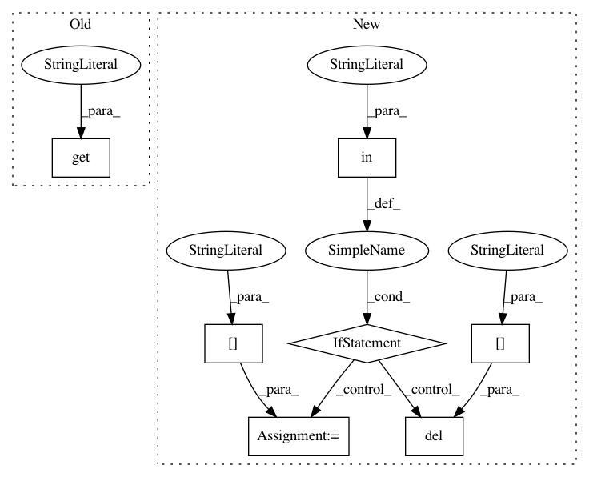

d42032d825201b5eee463fbaa7fb15ac46ed0643,opennmt/tokenizers/opennmt_tokenizer.py,,create_tokenizer,#Any#,12
Before Change
_set(kwargs, "segment_alphabet_change")
_set(kwargs, "segment_alphabet")
return pyonmttok.Tokenizer(config.get("mode", "conservative"), **kwargs)
class OpenNMTTokenizer(Tokenizer):
After Change
kwargs = copy.deepcopy(config)
mode = "conservative"
if "mode" in kwargs:
mode = kwargs["mode"]
del kwargs["mode"]
return pyonmttok.Tokenizer(mode, **kwargs)
class OpenNMTTokenizer(Tokenizer):
In pattern: SUPERPATTERN
Frequency: 3
Non-data size: 7
Instances
Project Name: OpenNMT/OpenNMT-tf
Commit Name: d42032d825201b5eee463fbaa7fb15ac46ed0643
Time: 2018-07-04
Author: guillaume.klein@systrangroup.com
File Name: opennmt/tokenizers/opennmt_tokenizer.py
Class Name:
Method Name: create_tokenizer
Project Name: analysiscenter/batchflow
Commit Name: bdd2b2603416dc51a744c302eee371441dee3883
Time: 2017-04-18
Author: rhudor@gmail.com
File Name: dataset/pipeline.py
Class Name: Pipeline
Method Name: run
Project Name: facebookresearch/ParlAI
Commit Name: 750f80bfcfdc355a54489cf89965e8e9c6c48174
Time: 2018-07-30
Author: ahm@fb.com
File Name: parlai/core/teachers.py
Class Name: FixedDialogTeacher
Method Name: batch_act